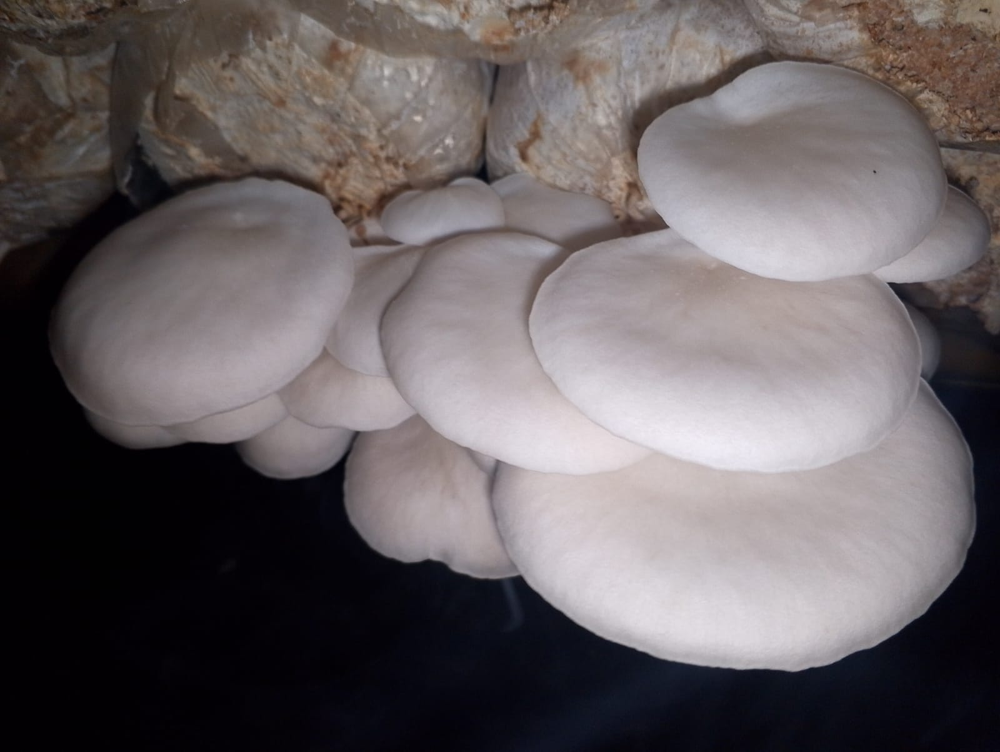
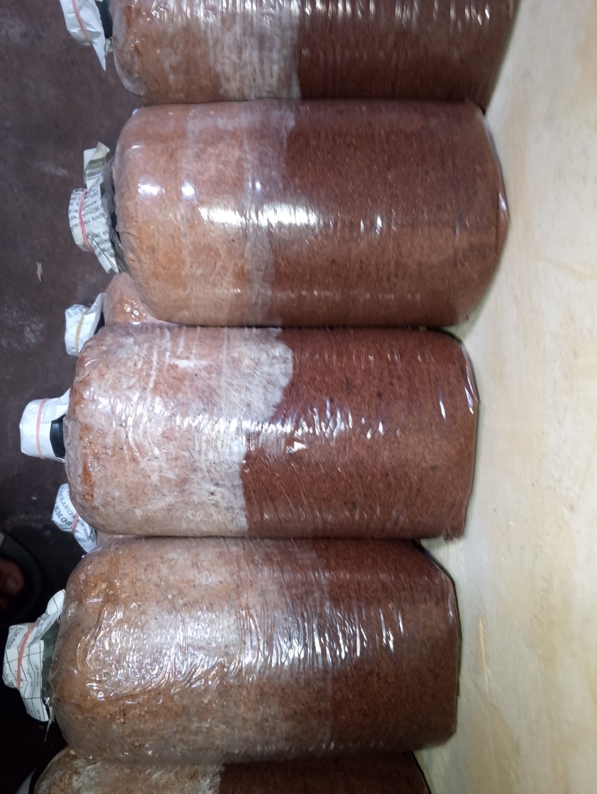
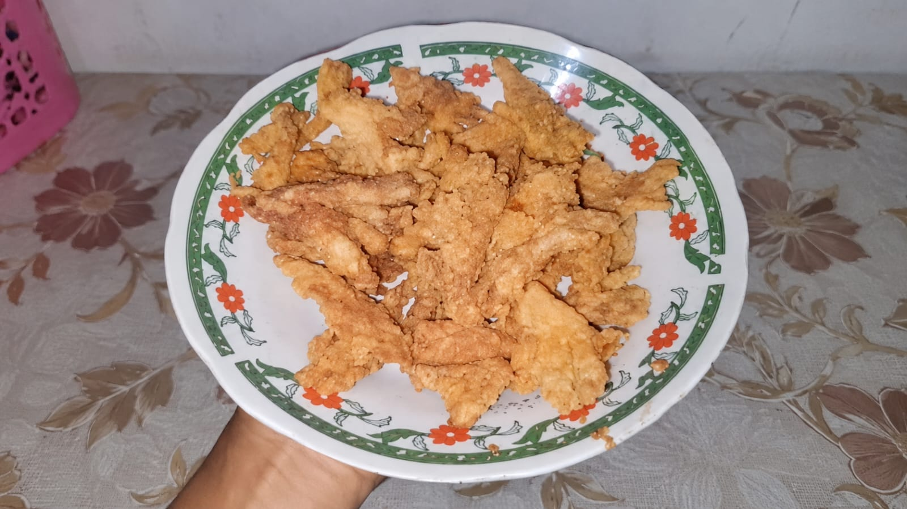

Jamur tiram segar
Kemasan 500 g atau 1 kg, dipanen di hari pemesanan.
Rp 0.000 / 500 g
Kami membudidayakan jamur tiram sendiri di kumbung yang bersih. Tebal, kenyal, dan dijual langsung dari petani tanpa perantara.
Pesan lewat WhatsAppJamur tiram Rinjani tumbuh di kumbung yang kami bersihkan setiap hari. Media tanam disterilkan, air dijaga bersih, dan tidak ada bahan kimia yang kami pakai untuk mempercepat panen.
Kami melayani warga sekitar, warung makan, dan pedagang sayur. Anda bisa memesan lewat WhatsApp atau datang langsung melihat tempat tumbuhnya.
Dipanen pagi, langsung dikemas dan dikirim di hari yang sama.
Tanpa pestisida dan bahan kimia berbahaya. Aman untuk keluarga.
Tekstur kenyal, kaya protein dan serat, cocok ditumis atau digoreng.
Tanpa perantara, jadi harga lebih terjangkau untuk Anda.

Kemasan 500 g atau 1 kg, dipanen di hari pemesanan.

Media tanam sudah berisi bibit. Tinggal letakkan di tempat lembap dan siram.

Renyah dan gurih, dibuat dari jamur hasil panen sendiri.
Kirim jumlah yang Anda butuhkan lewat WhatsApp. Pesanan sebelum jam 10 pagi kami antar di hari yang sama.
Pesan Sekarang melalui WhatsApp